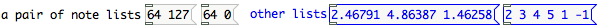
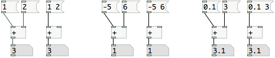
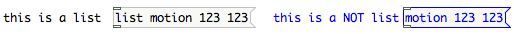
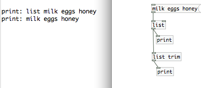

Lists
First, download the patches for this chapter: Lists.pd.zip
Often you want to group elements like numbers together into a single message so that an object can respond to multiple things at once. The simplest kinds of lists are made up of collections of numbers. For example if you want to turn on and off notes in a musical synthesizer, then you could make a list of two numbers that includes the pitch and the amplitude as a single message.

For many math objects, you can use a list as a shortcut for sending data to each inlet. With an object like [+ ], you can send a list of two floats to the left inlet, and [+ ] will interpret the second, rightmost number in the left as if it was sent to the right inlet, and the first, leftmost number as if it was sent to the left inlet.

Lists vs. list-messages
If you use the term "list" in common language, it may describe any collection of things. For example "milk eggs honey" could be your shopping "list". In Pd, lists are a very similar concept to something like a shopping list or a to-do list: a list is a collection of data that can be manipulated. Like to-do lists, you can add and remove items from lists. You can also do a wide range of things to lists in Pd, from sorting to math to generating symbols.
The term "list" often is used as a shorthand to describe a special kind of message: the so called "list-message". List-messages are messages that have the symbol "list" as their very first element (the selector). Lists starting with other words are sometimes called meta-messages in Pd lingo, and most objects react very different depending on what kind of message they receive. Lists are collections of data, that can be sent around between objects, while meta-messages are like commands to an object, telling the receiving object to do something specific, like open a file (e.g. "open voice.wav").
Pd sorts lists from meta-messages by looking at the first element. If the first element of a message is a float, then Pd labels that message a list. If the first element is a symbol, then Pd calls that message a non-list, or a meta-message. There is one caveat: if the first element is the symbol "list", then Pd calls that message a list.

Converting to and from lists
Our shopping list from above would not be a list-message to Pd, because it starts with the symbol "milk" instead of "list". So Pd would interpret it as a "milk"-message. To convert it to a proper list-message, you can send it through a [list] object: [list] will take any input and convert it to list-messages by prepending the symbol "list" in front so that it reads "list milk eggs honey" afterwards. If the first element already was "list", it will pass the message unchanged and not add a second "list" in front. To convert a list to a non-list meta-message, use [list trim] which will strip off the "list" again and leave you with "milk eggs honey".

Lists can used for processing collections of data. Once the data is organizing into lists, then it is much easier to sort the data and route it to the places it needs to go. There are a number of objects that output a range of different kinds of data, so they need to use lists instead of specific outlets.
Pd-extended includes a very useful library of objects that simplify all kinds of list operations: the list-abs. It gives you a wide variety of ways of manipulating and working with lists.